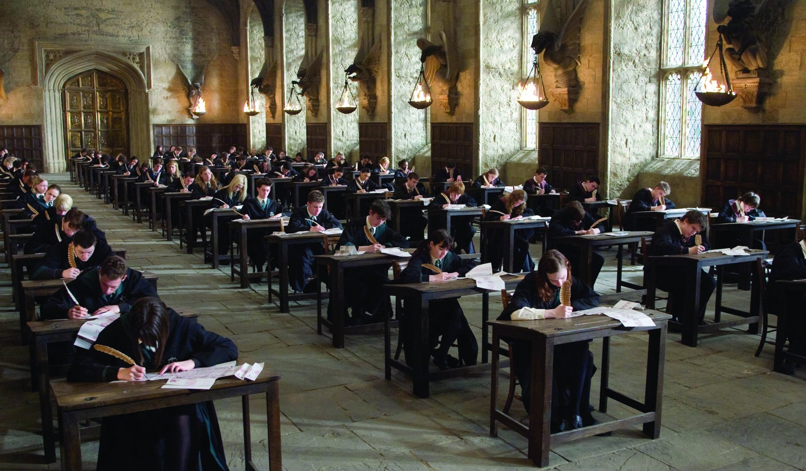

Los exámenes especiales son evaluados por El Tribunal de Exámenes Mágicos perteneciente al Ministerio de Magia, anualmente en el mes de Junio. Cada examen cuenta con una parte teórica y otra práctica. En la teórica, los alumnos se sientan en mesas individuales en el Gran Comedor y hacen su examen, mientras un gran reloj de arena cronometra la duración, que corresponde a dos horas. En el práctico cada alumno es examinado personalmente por un miembro del Tribunal de Exámenes Mágicos, quien le evalúa según sus aptitudes.
Título Indispensable de Magia Ordinaria (T.I.M.O.) o Matrícula de Honor en Brujería (MHB)
Son exámenes que los alumnos realizan en quinto curso en el mes de Enero, de cada una de las asignaturas cursadas. Este examen evalúa las competencias y conocimientos mágicos del estudiante para su posterior inserción al mundo mágico. El máximo número de T.I.M.O.s posible es 12. La mayoria de los T.I.M.O.S. se dividen en exámenes teóricos y exámenes prácticos. Dependiendo de las calificaciones obtenidas en las M.H.B.s, el alumno podrá elegir qué E.X.T.A.S.I.S. le convendría hacer para preparar su futuro oficio, ya sea en el mundo mágico o, sin la necesidad de ningún M.H.B. o E.X.T.A.S.I.S.en el mundo Muggle
"E.X.T.A.S.I.S. o Exámenes Terribles de Alta Sabiduría e Invocaciones Secretas"
Son cursados por los alumnos al finalizar el séptimo curso. El único requerimiento conocido para ser alumno de E.X.T.A.S.I.S. es haber obtenido alguna M.H.B. También se pide a los alumnos de E.X.T.A.S.I.S. que realicen hechizos no verbales. Para ser admitido en una clase nivel E.X.T.A.S.I.S. un estudiante primero debe lograr una calificación nivel "extraordinario" o "Supera las expectativas" en el T.I.M.O. con el fin de hacer frente al próximo trabajo del curso, que será mucho mas avanzado.
Datos Generales
Debido a la naturaleza seria e importante de las pruebas, la preparación para los T.I.M.O. y los E.X.T.A.S.I.S., los estudiantes comienzan a prepararse para los mismos en su cuarto año. Estos exámenes determinan qué tipo de carrera podrán obtener los estudiantes una vez que su educación esté completa. Algunas carreras requieren que ciertas asignaturas se tomen a nivel E.X.T.A.S.I.S. y con una calificación de aprobado o en algunos casos de calificaciones superiores. Los resultados de los T.I.M.O.s y los E.X.T.A.S.I.S. se entregan mediante cartas enviadas a los alumnos pocas semanas después de presentados. Encantamientos antitrampas son aplicados a todos los examenes T.I.M.O. Las plumas autorrespuesta, las recordadoras, los puños desmontables para copiarse y la tinta autocorrectora tambien estan prohibidos durante los examenes.
Curso de Aparición
El curso anual de Aparación es optativo y tiene una duración de 12 semanas. Solo pueden inscribirse alumnos que al momento de realizar el exámen ya hayan cumplido la mayoria de edad. El costo del curso es de 12 Galleons.